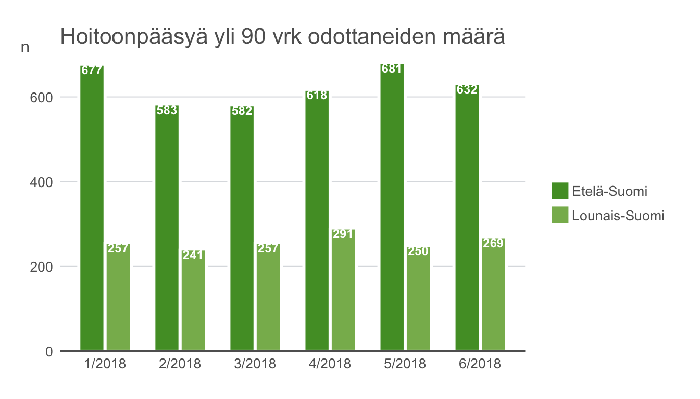
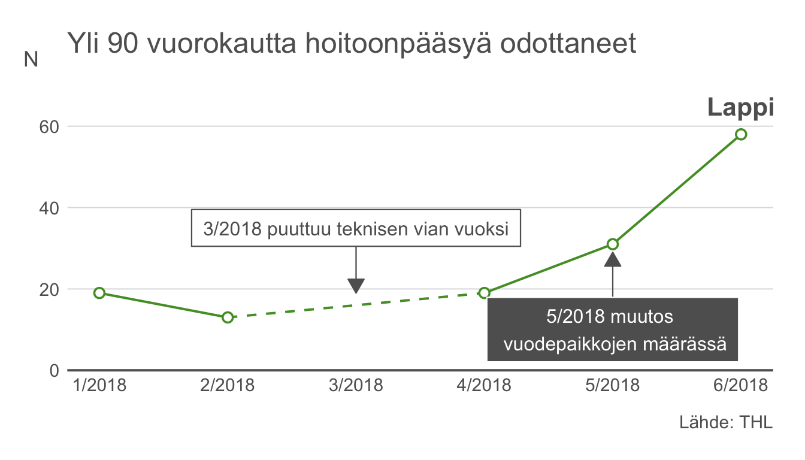

thlGraphs-vignette-barAndLineplots.RmdHow to make THL -style bar and line plots.
# Download the data:
data("yli180")
# A caption which is partially in bold
mycaption <- c(expression(paste(bold("Lähde:"), " THL")))
## Default, vertical bar plot:
thlBarPlot(data = subset(yli180, grepl("2017", kk)),
xvar = kk,
yvar = pros,
ylimits = c(0,2),
ylabel = "%",
title = "Erikoissairaanhoidosssa yli 180 vrk odottaneet",
caption = mycaption)## horizontal bar plot can be created with setting argument horizontal to TRUE:
p <- thlBarPlot(data = subset(yli180, grepl("2017", kk)),
xvar = kk,
yvar = pros,
ylimits = c(0,2),
ylabel = "%",
horizontal = TRUE)
p## thlGraphs wrapper functions return a ggplot -object, so they can be further modified
## like normal ggplots:
p + labs(title = "Erikoissairaanhoidosssa yli 180 vrk odottaneet",
caption = mycaption)## changing the colours is easy
mycol <- thlColors(n = 7, type = "powerpoint")[7]
thlBarPlot(data = subset(yli180, grepl("2017", kk)),
xvar = kk,
yvar = pros,
ylimits = c(0,2),
ylabel = "%",
horizontal = TRUE,
colors = mycol)### To show only every second x-axis label and y-values on the bars.
labs <- as.character(yli180$kk)
labs[seq(2, length(labs), by = 2)] <- ""
thlBarPlot(data = yli180,
xvar = kk,
yvar = pros,
ylimits = c(0,2), ylabel = "%",
title = "Erikoissairaanhoidosssa yli 180 vrk odottaneet (%)",
show.value=TRUE,
show.grid.y=FALSE,
xaxis.labels=labs,
caption = mycaption,
yaxis = FALSE)## Stacked bars:
data(yli90)
## reordering the dataset to long format
library(reshape2)
yli90l <- melt(yli90, id.vars = c("AVI"), variable.name = "kk", value.name = "n")
head(yli90l)
AVI kk n
1 Etelä-Suomi 1/2018 677
2 Lounais-Suomi 1/2018 257
3 Itä-Suomi 1/2018 166
4 Länsi- ja Sisä-Suomi 1/2018 578
5 Pohjois-Suomi 1/2018 257
6 Lappi 1/2018 19
thlBarPlot(data = subset(yli90l, AVI%in%unique(yli90l$AVI)[1:4]),
xvar = kk, yvar = n, groupvar=AVI,
legend="right",
title="Hoitoonpääsyä yli 90 vrk odottaneiden määrä",
show.grid.y=FALSE,
show.value=TRUE,
value.box = TRUE,
value.vjust=0.75,
xaxis=FALSE,
base.size = 18,
colors = thlColors(n = 4, type = "quali", name = "bar"))## Dodged bars:
thlBarPlot(data = subset(yli90l, AVI%in%unique(yli90l$AVI)[1:2]),
xvar = kk, yvar = n, groupvar=AVI,
legend="right",
title="Hoitoonpääsyä yli 90 vrk odottaneiden määrä",
show.value=TRUE,
value.vjust=0.7,
colors =thlColors(n = 7, type = "quanti", name="S1"),
stacked=FALSE,
ylimits = c(0,700))
## Using thlAnnotate() to label the bars manually:
# Plain barplot
data("borr")
head(borr)
alue pros
1 HUS 0.300
2 Ahvenanmaa 0.283
3 VSSHP 0.197
4 KymSHP 0.035
5 Vaasan SHP 0.028
6 muut SHP:t yhteensä 0.158
p <- thlBarPlot(data = borr[1:3,], xvar = alue, yvar = pros,
ylimits = c(0,0.4), ylabel = "%",
title = "Borreliosis in Finland", horizontal = TRUE, show.value=FALSE,
lang="ENG", legend.position="none",
show.grid.y=TRUE, xaxis.breaks=NULL,
caption=c(expression(paste(bold("Source:"), " THL"))))
## calculate positions for the labels:
ypos <- borr[1:3,"pros"]- 0.03
## plot and annotate
p + thlAnnotate(type = "label", x = 1, y = ypos[1],
label = borr$alue[1], style = "white",
text.size = 8, boldFont=FALSE, capitalized = TRUE) +
thlAnnotate(type = "label", x = 2, y = ypos[2],
label = borr$alue[2],
style = "white", text.size = 8, boldFont=FALSE, capitalized = TRUE) +
thlAnnotate(type = "label", x = 3, y = ypos[3],
label = borr$alue[3], style = "white",
text.size = 8, boldFont=FALSE, capitalized = TRUE) ## using thlTheme() will apply the basic THL formulations:
ggplot(data = subset(yli180, grepl("2017", kk))) +
geom_bar(aes(x = kk, y = pros), stat = "identity",
fill = thlColors(n = 1, type = "quali", name = "bar")) +
scale_y_continuous(expand = c(0,0), limits = c(0,2),
breaks = seq(0, 2, by = .5)) +
labs(title = "Erikoissairaanhoidosssa yli 180 vrk odottaneet", caption = mycaption, y= "%") +
thlTheme(base.size = 18)## Similarly, a horizontal bar plot:
ggplot(data = subset(yli180, grepl("2017", kk))) +
geom_bar(aes(x = kk, y = pros), stat = "identity",
fill = thlColors(n = 1, type = "quali", name = "bar")) +
scale_y_continuous(expand = c(0,0), limits = c(0,2),
breaks = seq(0, 2, by = .5)) +
labs(title = "Erikoissairaanhoidosssa yli 180 vrk odottaneet", caption = mycaption, y= "%") +
coord_flip() +
thlTheme(base.size = 18, horizontal = TRUE)## Reshaping the data to long format
library(reshape2)
yli90l <- melt(yli90, id.vars = c("AVI"), variable.name = "kk", value.name = "n")
yli90l$kk <- as.character(yli90l$kk)
## Default line plot:
thlLinePlot(data = yli90l, xvar = kk, yvar = n, groupvar = AVI, ylimits = c(0,700))## Add some elements including titles and caption
mycaption <- c(expression(paste(bold("Lähde:"), " THL"))) ## Create a caption which is partially in bold
thlLinePlot(data = yli90l, xvar = kk, yvar = n, groupvar = AVI,
ylimits = c(0,700),
title = "Yli 90 vuorokautta hoitoonpääsyä odottaneet",
subtitle = "Tilanne sairaanhoitopiireittäin",
caption = mycaption,
ylab = "N",
base.size = 18,
linewidth = 2)## By default the missing values are not plotted. Let's assume that for
## 3/2018 the data from Lappi was missing
yli90l$n2 <- with(yli90l, ifelse(AVI=="Lappi" & as.character(kk)=="3/2018", NA, n))
thlLinePlot(data = yli90l, xvar = kk, yvar = n2, groupvar = AVI,
ylimits = c(0,700),
title = "Yli 90 vuorokautta hoitoonpääsyä odottaneet",
subtitle = "Tilanne sairaanhoitopiireittäin",
caption = mycaption,
ylab = "N",
base.size = 18,
linewidth = 2)
Warning: Removed 1 rows containing missing values (geom_point).## Allow linear interpolation of missings:
thlLinePlot(data = yli90l, xvar = kk, yvar = n2, groupvar = AVI,
ylimits = c(0,700),
title = "Yli 90 vuorokautta hoitoonpääsyä odottaneet",
subtitle = "Tilanne sairaanhoitopiireittäin",
caption = mycaption,
ylab = "N",
base.size = 18,
linewidth = 2,
plot.missing = TRUE)
Warning: Removed 1 rows containing missing values (geom_point).## add labels to the end of the lines:
thlLinePlot(data = yli90l, xvar = kk, yvar = n2, groupvar = AVI,
ylimits = c(0,700),
title = "Yli 90 vuorokautta hoitoonpääsyä odottaneet",
subtitle = "Tilanne sairaanhoitopiireittäin",
caption = mycaption,
ylab = "N",
base.size = 18,
linewidth = 2,
plot.missing = TRUE,
labels.end = TRUE)
Warning: Removed 1 rows containing missing values (geom_point).## Instead of labels at the line ends you can also use legend...
thlLinePlot(data = yli90l, xvar = kk, yvar = n2, groupvar = AVI,
ylimits = c(0,700),
title = "Yli 90 vuorokautta hoitoonpääsyä odottaneet",
subtitle = "Tilanne sairaanhoitopiireittäin",
caption = mycaption,
lang = "ENG",
ylab = "N",
base.size = 18,
linewidth = 2,
plot.missing = TRUE,
legend.position = "right")
Warning: Removed 1 rows containing missing values (geom_point).## ... or plot all groups on different panels ...
thlLinePlot(data = yli90l, xvar = kk, yvar = n2, groupvar = AVI,
ylimits = c(0,750),
title = "Yli 90 vuorokautta hoitoonpääsyä odottaneet",
subtitle = "Tilanne sairaanhoitopiireittäin",
caption = mycaption,
ylab = "N",
base.size = 18,
linewidth = 2,
plot.missing = TRUE,
panels = TRUE, nrow.panels = 3)
Warning: Removed 1 rows containing missing values (geom_point).## ... or annotate the information manually with thlAnnotate()
p <- thlLinePlot(data = subset(yli90l, AVI=="Lappi"),
xvar = kk, yvar = n2, groupvar = AVI, ylimits = c(0,75),
title = "Yli 90 vuorokautta hoitoonpääsyä odottaneet",
caption = mycaption, lang = "ENG", ylab = "N",
base.size = 18, linewidth = 2,
plot.missing = TRUE)
p + thlAnnotate(type = "label", x = 6, y = 65,
label = "Lappi", style = "white") +
thlAnnotate(type = "box", x = 3, y = 35, yend = 19,
label = "3/2018 puuttuu teknisen vian vuoksi", style = "white",
fill = TRUE, text.size = 12) +
thlAnnotate(type = "box", x = 5, y = 10, yend = 29,
label = "5/2018 muutos \n vuodepaikkojen määrässä", style = "dark",
fill = TRUE, text.size = 12)
Warning: Removed 1 rows containing missing values (geom_point).
A slope graph can be created using thlLinePlot()
thlLinePlot(data = subset(yli90l, kk %in% c("1/2018", "6/2018")),
xvar = kk, yvar = n, groupvar = AVI, ylimits = c(0,800),
title = "Yli 90 vuorokautta hoitoonpääsyä odottaneet",
subtitle = "Muutos 1/2018 - 6/2018",
xaxis.breaks = c("1/2018", "6/2018"),
caption = mycaption, ylab = "N",
base.size = 18, linewidth = 2, labels.end = TRUE,
show.grid.x = TRUE)